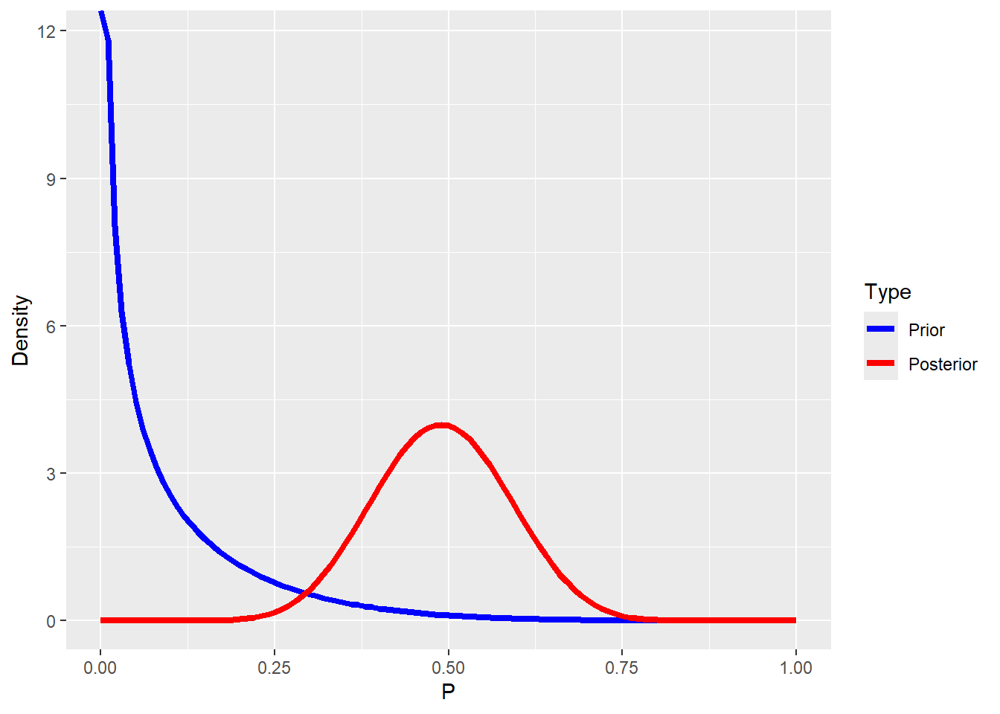

library(tidyverse)
library(ProbBayes)2 Lab1: Bayesian inference with beta priors, Jingchen Hu
3 Intro
This is a lab by a professor, Jinchen Hu, which goes over Bayesian inference with beta priors.
4 Load libraries
5 Posterior predictive checking
S<-10000 # number of simulations
a<-3.06 # a in beta(a,b)
b<-2.56 # b in beta(a,b)
n<-20 # number of trials
y<-12 # number of successes
newy=as.data.frame(rep(NA,S))
names(newy)=c("y")
set.seed(123)
for (s in 1:S){
pred_p_sim<-rbeta(1, a+y, b+n-y) # step 1 ; get posterior param
pred_y_sim<-rbinom(1,n,pred_p_sim) # step 2; based on param, predict outcome-> # of successes
newy[s,]=pred_y_sim
}
knitr::kable(head(newy))| y |
|---|
| 14 |
| 13 |
| 8 |
| 12 |
| 14 |
| 5 |
#how i would write the simluation
dat<-tibble(pred_p=rbeta(S,a+y,b+n-y))|>
rowwise()|>
mutate(pred_y=rbinom(1,n,pred_p))
sum(dat$pred_y>=5&dat$pred_y<=15)/S[1] 0.8943#dat$pred_y<-rbinom(1000,n,dat$pred_p)
ggplot(data=dat,aes(pred_y))+geom_density()+scale_x_continuous(breaks=seq(0,20,1),labels=seq(0,20,1))6 Let’s try to simulate a situation with mismatched prior with the data
beta_draw(c(3.06,2.56)) #prior fromp revious section beta_draw(c(0.5,5)) #this looks liek a good prior to mess up the data 
s<-10000
n<-20 # trials
y<-12 #successes
a<-.5
b<-5
dat2<-tibble(pred_p=rbeta(S,a+y,b+n-y))|>
rowwise()|>
mutate(pred_y=rbinom(1,n,pred_p))
# model check : how often pr(y > ypred|y)
sum(y>dat2$pred_y)/S # how often collected data above posterior prediction[1] 0.71581-sum(y>dat2$pred_y)/S #how often collected data below posterior prediction[1] 0.2842#draw posterior
beta_prior_post(c(.5,5),c(a+y,b+n-y))
7 Session info
beta_draw(c(.3,.7)) sessionInfo()R version 4.5.0 (2025-04-11 ucrt)
Platform: x86_64-w64-mingw32/x64
Running under: Windows 11 x64 (build 26100)
Matrix products: default
LAPACK version 3.12.1
locale:
[1] LC_COLLATE=English_United States.utf8
[2] LC_CTYPE=English_United States.utf8
[3] LC_MONETARY=English_United States.utf8
[4] LC_NUMERIC=C
[5] LC_TIME=English_United States.utf8
time zone: America/New_York
tzcode source: internal
attached base packages:
[1] stats graphics grDevices utils datasets methods base
other attached packages:
[1] ProbBayes_1.1 shiny_1.10.0 gridExtra_2.3 LearnBayes_2.15.1
[5] lubridate_1.9.4 forcats_1.0.0 stringr_1.5.1 dplyr_1.1.4
[9] purrr_1.0.4 readr_2.1.5 tidyr_1.3.1 tibble_3.2.1
[13] ggplot2_3.5.2 tidyverse_2.0.0
loaded via a namespace (and not attached):
[1] generics_0.1.3 stringi_1.8.7 hms_1.1.3 digest_0.6.37
[5] magrittr_2.0.3 evaluate_1.0.3 grid_4.5.0 timechange_0.3.0
[9] fastmap_1.2.0 jsonlite_2.0.0 promises_1.3.2 scales_1.3.0
[13] cli_3.6.4 rlang_1.1.6 munsell_0.5.1 withr_3.0.2
[17] yaml_2.3.10 tools_4.5.0 tzdb_0.5.0 colorspace_2.1-1
[21] httpuv_1.6.16 vctrs_0.6.5 R6_2.6.1 mime_0.13
[25] lifecycle_1.0.4 htmlwidgets_1.6.4 pkgconfig_2.0.3 pillar_1.10.2
[29] later_1.4.2 gtable_0.3.6 glue_1.8.0 Rcpp_1.0.14
[33] xfun_0.52 tidyselect_1.2.1 rstudioapi_0.17.1 knitr_1.50
[37] farver_2.1.2 xtable_1.8-4 htmltools_0.5.8.1 rmarkdown_2.29
[41] labeling_0.4.3 compiler_4.5.0